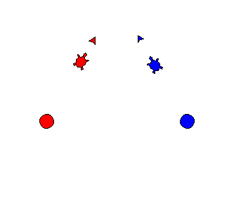

Home
Portfolio
About Me
This is my Portfolio Page!
My first project! The Wacky Triangle.


First we imported the turtle and math to begin. After that we created two empty lists for the sets of shape objects that we were going to use, those being “left_shapes” and “right_shapes”. Then we made lists for the shapes and colors of the objects that we used to initialize our objects. We then added the shapes into the picture, colorized them, and moved them into their starting positions, with the objects in “left_shapes” being facing the same direction and the objects in “right_shapes” facing another direction. The shapes then moved forward and we established a condition for what happens after the first collision. We then set up the collision and step counters to keep it going. After the shapes collided for the first time, they changed color and shape and moved in the opposite direction. We stored the original colors and shapes of the objects in variables so that we could revert them to their original conditions after the second collision. Because the objects followed a triangular path, they switched directions again and began to move toward each other after moving a predetermined distance after the first collision.
Using App Inventor to make app game Duck Hunter (delete later).
Interactive Fiction Rags to Riches (delete later).
Black Jack game written in Python (delete lter).
Modified bits in pictures (delete later).
Use data files to create graphs (delete later, lol).
Using netlogo do remix of illusions (delete later again).
Interactive Fiction Rags to Riches (Ryan Lockie is #1 and delete lter).